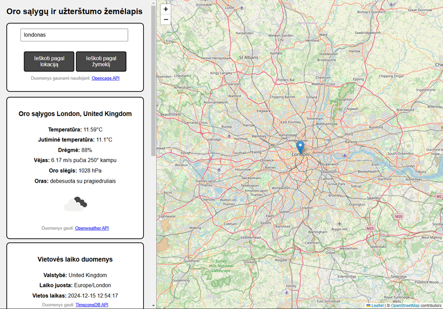
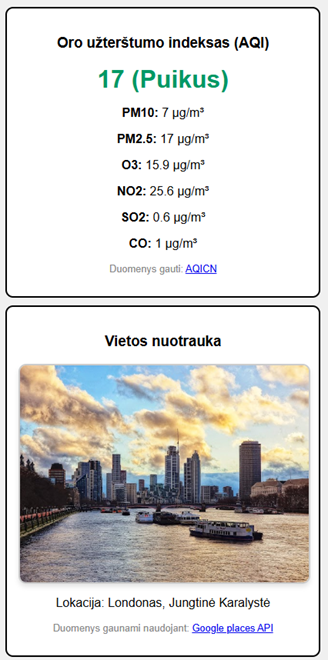
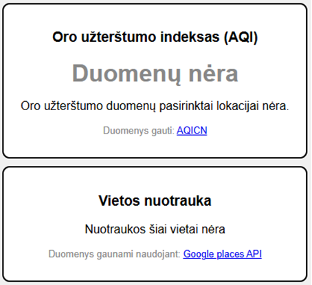

Apie programą
Sukurta programa leidžia sužinoti oro sąlygas, oro užterštumą ir laiko duomenis nurodytoje vietovėje.
Programa leidžia tinklapio naudotojui nurodyti vietovės, kurios oro sąlygas norima gauti, lokaciją įvedant vietovės pavadinimą paieškos laukelyje ar žymekliu nurodant vietovę žemėlapyje. Tuomet programa pagal gautus duomenis tinklapyje parodo oro sąlygas, laiko juostos duomenis ir jeigu yra galimybė oro užterštumo duomenis ir vietovės nuotrauką.
Pagrindinis naudotojas yra tinklapio lankytojas. Šiam naudotojui prisiregistruoti ar prisijungti nereikia, jis programą gali naudoti iš karto, tačiau šiam naudotojui yra nustatyti limitai: programos mygtukus galima spausti tik kas 5 sekundes ir 15 minučių tarpe galima atlikti ribotą kiekį užklausų.
Saugumas
Saugumui ir „DoS“ atakų apsaugai naudojami įvedimo apribojimai ir siunčiamų užklausų ribojimas iš vieno lango arba IP adreso naudojant „Express-rate-limit“ programinę įrangą, kuri neleidžia naudotojui siųsti „API“ užklausų pasiekus nustatytą limitą tam tikrame laiko tarpe.
Programos veikimas
Programa turi du pagrindinius būdus įvesti lokacijos duomenis, reikalingus gauti oro sąlygų, užterštumo ir laiko juostos duomenis. Pirmasis būdas reikalauja naudotojo įvesti lokacijos pavadinimą į tinklapyje esantį teksto laukelį ir spausti mygtuką „Ieškoti pagal lokaciją“. Antrasis būdas reikalauja naudotojui žemėlapyje „nutemti“ žymeklį į norimą poziciją iš kurios norima gauti duomenis ir spausti mygtuką „Ieškoti pagal žymeklį“.
Paspaudus vieną iš mygtukų, įvesti duomenys bus perduodami pirmajam „Opencage API“. Abu mygtukai bus išjungiami penkioms sekundėms. Tinklapio ekrane tuomet atsiras iš skirtingų „API“ gauti duomenys.
 Svarbu paminėti, kad atveju, kai oro užterštumo ar nuotraukų „API“ duomenų negrąžina, nes pagal nurodytą vietovę šių duomenų rasti nebuvo galima (gali būti, kad duomenys nerenkami dėl sekimo stotelių trūkumo, geopolitinių ar kt. priežasčių), oro sąlygų ir vietos „API“ duomenys vistiek rodomi tinklapyje.
Panaudotos technologijos
Programai realizuoti naudojamas „Node.js“ karkasas kuris naudoja „Javascript“ programavimo kalbą. Programoje taip pat naudojamas „Express.js“ reikalingas valdyti „API“ užklausas. Programos tinklapis (index.html) sukurtas naudojantis HTML ir CSS kalbomis. Visų programoje naudojamų „API“ raktai saugomi atskirame faile „.env“, todėl esant poreikiui galima papildomai apsaugoti šiuos duomenis. Programoje naudojami 5 „REST API“:
- „Opencage API“ – Šis „API“ leidžia konvertuoti įvestą vietos pavadinimą į koordinates kurias naudoja kiti programos „API“. Naudojant žemėlapio žymeklį, šis „API“ koordinates paverčia į tekstinį adresą atvaizdavimui.
- „Openweather API“ – Tiksliau naudojama „Current weather data API“ užklausa leidžianti gauti esamas oro sąlygas pagal nurodytas koordinates.
- „AQICN API“ – Naudojamas gauti oro užterštumo duomenis pagal nurodytą miestą. Šio „API“ duomenys yra pasiekiami ne visur, nes „stotelės“ renkančios duomenis kai kur gali būti nepasiekiamos, todėl reikia atitinkamai valdyti gautus duomenis.
- „TimezoneDB API“ – Gaunami laiko juostos ir nurodytos vietos dabartinio laiko duomenys pagal nurodytas koordinates.
- „Google places API“ – reikalingas gauti nurodytos vietos nuotrauką.
Naudojami API: